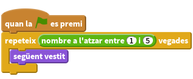
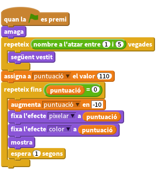
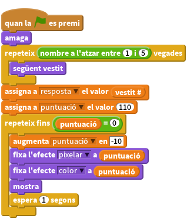
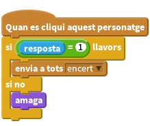
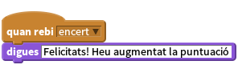

Introducció
Una animació aleatoria aparareix a la pissarra completament distorsionat. Haureu d’endevinar què és seleccionant la imatge correcta. Quant més ràpid l’endevineu, més alta serà la vostra puntuació!
Pas 1: Feu aparèixer personatges diferents a la pissarra
Volem fer aparèixer uns quants objectes diferents a la pissarra.
Llista de tasques
- Creeu un nou projecte d’Scratch i suprimiu el personatge Fèlix.
- Feu clic a l’escenari i després a la pestanya Fons. Importeu el fons interiors/chalkboard (pissarra).
- Importeu un nou personatge i doneu-li el nom que volgueu. Podeu escollir-ne algun de la carpeta ‘coses’.
- Col.loqueu-lo al centre de la pantalla. Feu-lo més gran o més petit si us cal.
- Feu clic a la pestanya de vestits i importeu quatre personatges més. Poden ser el que volgueu! I ara, fem que aparegui una imatge aleatòria.
Creeu aquest programa:

Proveu el projecte
Feu clic a la bandera verda.
L’animació canvia de vestit?
Feu-hi clic més vegades.
Obteniu vertits diferents cada vegada? A vegades obtindreu el mateix vestit consecutivament, no us amoineu: és normal. Noteu també que el personatge parpelleja quan canvia de vestit. Ho arreglarem en el pas següent.
Deseu el projecte
Pas 2: Distorsioneu les imatges
A continuació distorsionarem les imatges quan apareguin i les corregirem al cap d’uns segons.
Emprarem una variable de puntuació (puntuació) per controlar el grau de distorsió. Si la puntuació és elevada, hi haurà molta distorsió. La distorsió disminuirà, quan ho faci la puntuació. La variable funcionarà també com a cronòmetre, de la mateixa manera que ho fa la variable del bloc de Sensors cronòmetre.
Llista de tasques
- Al bloc de Dades, creeu una nova variable i anomeneu-la puntuació.
Modifiqueu el programa així:

Proveu el projecte
Feu clic a la bandera verda.
- Apareix una imatge aleatòria i distorsionada?
- El nivell de distorsió disminueix gradualment?
- La variable puntuació disminueix quan la imatge redueix el grau de distorsió?
- Quan puntuació arriba a zero, observeu una imatge sense cap distorsió?
- Cada cop que premeu la bandera verda, observeu una imatge diferent?
Deseu el projecte
Per saber-ne més
Proveu de canviar el valor inicial de la variable puntuació i quina quantitat canvia. Com afecten aquests canvis a la imatge? És més fàcil o més difícil d’endevinar què és?
Proveu efectes gràfics diferents enlloc de pixelar. Noteu com varia el grau de dificultat per endevinar el personatge.
Pas 3: Permeteu al jugador endevinar la imatge
Fins ara hem fet aparèixer gradualment la nostra imatge aleatòria, mentre la puntuació decreixia amb el temps, però com ho hem de fer per poder guanyar? Afegirem algunes animacions al final de la pantalla de manera que el jugador pugui seleccionar-los. Si premen la imatge correcta, guanyen al joc, sinó, l’animació desapareixerà i el joc continuarà.
Primer, és necessari conèixer quina és la resposta correcta.
- Creeu una variable anomenada resposta. Assegureu-vos que és vàlida per a totes les animacions.
Modifiqueu el programa que heu escrit per emmagatzemar la resposta correcta:

Ara afegirem els personatges perquè el jugador els pugui prémer.
- Dupliqueu el personatge principal i arrosegueu el duplicat fins a la cantonada esquerra i a baix de l’escenari.
- Anomeneu-lo resposta1. (Així serà més fàcil referir-s’hi.)
- Elimineu el programa de resposta1 i tots els seus vestits excepte el primer.
- Repetiu els tres últims passos, anomenant resposta2 el nou personatge i elimineu el programa i tots els seus vestits excepte el segon.
- Repetiu-ho tres cops més anomenant resposta3, resposta4 i resposta5.
Hauríeu d’obtenir una fila de cinc personatges ‘resposta’ al final de l’escenari, cadascun mostrant un vestit diferent al del personatge principal. Cap d’aquests personatges hauria de tenir associat un programa.
Arribats aquí, voldrem que quan fem clic en cadascun dels personatges, aquests facin alguna cosa en funció de si la resposta és correcta o no.
Afegiu aquest programa al personatge resposta1:

- Arrossega aquest programa a cadascun dels altres personatges resposta. A cada personatge, canvia 1 per 2, 3, etc.
Ara cal afegir alguna cosa que respongui al missatge ‘encert’. Torneu al personatge, al que està a la pissarra i afegiu-li aquest programa:

Proveu el projecte
Feu clic a la bandera verda.
- Quan proveu el joc, podeu emprar el camp de l’escenari resposta monitor per escriure quina és la resposta correcta. Això us pot ajudar mentre feu proves.
- Què succeeix quan feu clic a resposta correcta?
- Què succeeix quan feu clic a resposta incorrecta?
- Què li succeeix a resposta incorrecta quan comenceu una nova partida?
Aquesta prova presenta dos problemes. Primer, les respostes errònies no reapareixen al començar una nova partida. Segon, la puntuació continua disminuint un cop s’ha especificat la resposta correcta.
Per solucionar el primer problema, afegeix aquest programa a les cinc animacions:
Per solucionar el segon, haureu de parar la repetició de què és fins que el jugador faci clic a la resposta correcta. Per fer-ho emprarem una nova variable. Li donarem el valor 0 quan comenci la partida i li donarem el valor 1 quan el jugador guanyi. Farem que la repetició ‘repeteix fins’ finalitzi quan la puntuació arribi a 0 o bé quan encert? s’assigni a 1.
- Creeu una nova variable i anomeneu-la encertat?
Modifiqueu els programes de la següent manera:
![Quan la BANDERA VERDA es premi
amaga
repeteix (nombre a l'atzar entre (1) i (5)) vegades
següent vestit
fi
assigna a [resposta v] el valor (vestit #)
assigna a [puntuació v] el valor (110)
assigna a [encert v] el valor (0)
repeteix fins <(puntuació) = (0)>
augmenta [puntuació v] en [-10]
fixa l'efecte [pixelar v] a (puntuació)
fixa l'efecte [color v] a (puntuació)
mostra
espera (1) segons
fi
Quan rebi [encert v]
assigna a [encertat? v] el valor (1)
treu els efectes gràfics
digues [Felicitats! Heu augmentat la puntuació]](136aa0929cfedfe522073c389002f9ad565135ca.png)
Deseu el projecte
Felicitats! Heu finalitzat el joc!
Per saber-ne més, intenteu els següents reptes!
Repte 1: Feu que el joc sigui més fàcil o més difícil
Modifiqueu el grau de dificultat del joc.
- Intenteu modificar la velocitat amb la que la imatge es mostra sense distorsionar i com de ràpid disminueix la puntuació.
- Intenteu modificar els tipus de distorsió aplicades a la imatge.
- Intenteu modificar les imatges per fer-les més semblants o diferents entre elles. Si proveu aquesta part, no us oblideu de modificar la resposta (resposta) de cada vestit.
Deseu el projecte
Repte 2: Distorsioneu la imatge de forma diferent a cada partida
Fins ara cada jugada utilitza el mateix tipus de distorsió. En el pas 2, heu provat diferents tipus de distorsions que funcionaben prou bé.
Trobeu distorsions diferents que funcionin bé.
Modifiqueu el joc de manera que cada partida utilitzi una distorsió diferent.
Ajut: Intenteu crear una nova variable, anomenada distorsió. Fixeu-li un valor a l’atzar al començar la partida. Utilitzeu blocs condicionals dins el bucle per tal d’aplicar la distorsió que correspongui.
Deseu el projecte
Repte 3: Feu que el joc disposi de varis intents
Fins ara cada joc és independent. Canvieu-lo de manera que tingui varis intents. Per exemple, feu que tingui tres intents de manera que el jugador hagi d’endevinar tres imatges i pugui aconseguir fins a 300 punts.
Ajut: Necessitareu una variable extra per emmagatzemar la puntuació total dels 3 intents. La podeu anomenar puntuacio_partida. També necesitareu un bucle que passi pels diferents intents.
Ajut: Haureu de fer reaparèixer de nou totes les imatges de les respostes errònies al principi de cada intent. Podeu enviar el missatge reset, per exemple a través de la instrucció envia a tots.
Deseu el projecte
Repte 4: Incrementeu la dificultat de cada intent
Quan el jugador avanci pels diferents intents, incrementeu-ne el nivell de dificultat, per exemple modificant-ne els efectes de distorsió.
Cada intent ha de puntuar el mateix? Hi ha alguna manera d’obtenir més punts quan s’endevini més ràpidament la resposta en etapes més difícils? Quina?
Ajut: Com sabreu en quin intent us trobeu? Com podreu emprar aquesta informació per modificar el nivell de dificultat i la puntuació?
Deseu el projecte
Repte 5: Continueu el joc fins que el jugador cometi un error
Enlloc d’assignar un nombre finit d’intents, feu que el joc continui fins que el jugador s’equivoqui. Això només tindrà sentit si el joc es complica a mesura que avancen els intents.
Repte 6: Varieu la dificultat del joc en funció de com de bé ho faci el jugador
Enlloc d’incrementar sempre la dificultat, feu que el grau de dificultat s’ajusti al nivell de jugador. Si endevina la imatge ràpidament, feu que el següent intent sigui més difícil. Si, al contrari, el jugador no l’encerta o triga molt a fer-ho, feu el següent intent més senzill.
Aquesta idea només funcionarà si no sumeu les puntuacions a través dels intents.
Deseu el projecte
Repte 7: Guardeu la puntuació més alta
Si algú aconsegueix millorar la puntuació més alta assolida fins llavors, demaneu-li el nom al jugador i actualitzeu la millor puntuació. Asegureu-vos que la puntuació més alta i el nom del jugador que l’ha aconseguit es mostrin a la pantalla.
Deseu el projecte
Repte 8: Penalitzeu les respostes errònies
Fins ara no hi ha cap penalització si el jugador selecciona totes les animacions tan de pressa com pugui. Modifiqueu el joc de manera que la puntuació disminueixi una mica cada vegada que es premi un resposta incorrecta.
Considereu que el joc millora?
Deseu el projecte
Felicitats! Heu finalitzat el joc i ara a gaudir-ne!
No oblideu que podeu compartir-lo amb els amics i la familia fent clic al botó Comparteix a la barra del menú.